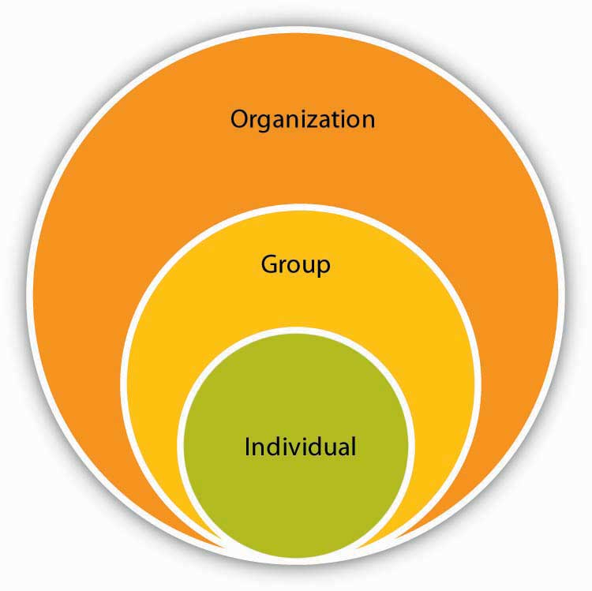
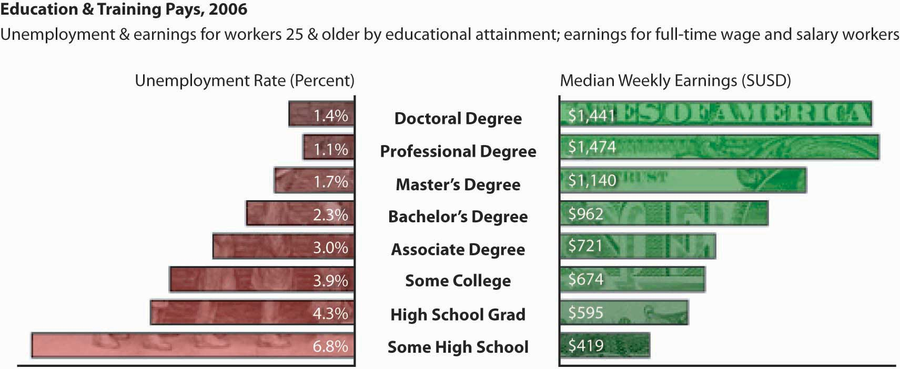

After reading this chapter, you should be able to understand and articulate answers to the following questions:
The traditional textbook publishing model no longer serves the interests of students, educators, and authors. Textbooks are too expensive for students and too inflexible for instructors. And authors, the major, initial source of value in the industry, are increasingly confused by faster revision demands and their compensation for those revisions. Flat World addresses all these industry pain points.
Jeff Shelstad
In 2007, two textbook publishing industry veterans, Jeff Shelstad and Eric Frank, started Unnamed Publisher, a privately held company, to be a new and disruptive model for the college textbook market. Traditional business textbook publishers carry a portfolio of 5 to 10 titles per subject and charge premium prices for new textbooks, an average of $1,000 in textbooks for a college student’s first year, according to a recent General Accounting Office (GAO) report. FWK’s strategy aims to turn the traditional model on its head by providing online textbook access free to students (http://www.gone.2012books.lardbucket.org). FWK earns revenues by selling students the digital textbooks in alternate formats, print and audio initially, and also by selling highly efficient and mobile study aids. Despite the fact that professors have rated the academic quality of FWK textbooks as equal to or higher than that of textbooks from traditional publishers, the cost to students is a fraction of current market prices due to the efficiencies of the FWK business model. Moreover, with FWK’s platform, instructors who adopt FWK books for their classes are able to pick and choose the material provided to their students, even if it is from earlier versions of textbooks that have since been revised.
Shelstad and Frank previously served as the editorial director and the marketing director, respectively, at Prentice Hall, a major U.S. publisher of educational materials and a division of Pearson PLC. They resigned from Prentice Hall in January 2007 with plans to start a higher education publishing business together. During the first several months, they met with many students, professors, authors, advisors, and potential angel investors. The result was Unnamed Publisher. Shelstad became the CEO; Frank was the chief marketing officer. They also added David Wiley as the chief openness officer.
Asked why he started FWK, Shelstad said, “I was convinced the college textbook publishing industry model was broken.” He added, “When more and more students are running from your core product, you have a problem. For example, many leading business school textbooks sell in the college bookstore or on various Internet sites for $150 or more. Students by and large don’t see that value. So they search frantically for substitutes, and the Internet has made the availability and pricing of substitutes very obvious.” In its first term (fall of 2009), FWK had 40,000 students using its textbooks. This steadily continued to rise as faculty discovered the low-priced alternative that combined quality and affordability for their students. As of January 2013, FWK has published more than 100 books, with faculty customers at more than 2000 institutions in 44 countries. As a result, more than 600,000 students have benefited from affordable textbook choices that lower costs, increase access, and personalize learning.
Media attention regarding the fledgling FWK was generally very favorable. Social media experts also gave the company accolades. For example, Chris Anderson devoted a page to the FWK business model in his bestselling book ”Free: The Future of a Radical Price.” Moreover, early user reviews of the product were also very positive. For instance, an instructor who adopted an early FWK text, Principles of Management, noted, “I highly recommend this book as a primary textbook for…business majors. The overall context is quite appropriate and the search capability within the context is useful. I have been quite impressed [with] how they have highlighted the key areas.” At the same time, opportunities to improve the Web interface still existed, with the same reviewer noting, “The navigation could be a bit more user friendly, however.” FWK uses user input like this to better adjust the strategy and delivery of its model. This type of feedback led the FWK design squad to improve its custom Web interface, so that instructors can more easily change the book.
Further changes occurred in late 2012, when the company announced it would no longer offer free online access to its textbooks. Moving from “free to fair” (the entry point for students is now $19.95) was a difficult but necessary decision. On its website, the company explained:
“As the transition to digital has changed student buying trends, the free format has become a barrier to our long-term growth and ability to offer a fair and affordable model that works for all our customers, from individual students and instructors to our institutional partners.”
In December 2012, the company announced the appointment of Christopher Etesse as CEO. Etesse is a former senior executive and Chief Technology Officer with Blackboard Inc. Shelstad will remain with the company in a strategic role as Founder.
Only time will tell if the $30 million invested in FWK by 2012 will result in the establishment of a new titan in textbook publishing or will be an entrepreneurial miss.
Case written by [citation redacted per publisher request]. Based on information from United States Government Accountability Office. (2005, July). College textbooks: Enhanced offering appear to drive recent price increases (GAO-05-806). Retrieved April 22, 2010, from http://www.gao.gov/cgi-bin/getrpt?GAO-05-806; Unnamed Publisher Web site: http://www.gone.2012books.lardbucket.org; Community College Open Textbook Collaborative. (2009). Business reviews. Retrieved April 22, 2010, from http://www.collegeopentextbooks.org/reviews/business.html; Personal interviews with Jeff Shelstad and Eric Frank.
The people make the place.
Benjamin Schneider, Fellow of the Academy of Management
This book is all about people, especially people at work. As evidenced in the opening case, we will share many examples of people making their workplaces work. People can make work an exciting, fun, and productive place to be, or they can make it a routine, boring, and ineffective place where everyone dreads to go. Steve Jobs, cofounder, chairman, and CEO of Apple Inc. attributes the innovations at Apple, which include the iPod, MacBook, and iPhone, to people, noting, “Innovation has nothing to do with how many R&D dollars you have.…It’s not about money. It’s about the people you have, how you’re led, and how much you get it.”Kirkpatrick, D. (1998). The second coming of Apple. Fortune, 138, 90. This became a sore point with investors in early 2009 when Jobs took a medical leave of absence. Many wonder if Apple will be as successful without him at the helm, and Apple stock plunged upon worries about his health.Parloff, R. (2008, January 22). Why the SEC is probing Steve Jobs. Money. Retrieved January 28, 2009, from http://money.cnn.com/2009/01/22/technology/stevejobs_disclosure.fortune/?postversion=2009012216.
Figure 1.2
Steve Jobs is known for developing innovative products by hiring the right people for the job and fostering a culture of hard work and creativity.
Mary Kay Ash, founder of Mary Kay Inc., a billion-dollar cosmetics company, makes a similar point, saying, “People are definitely a company’s greatest asset. It doesn’t make any difference whether the product is cars or cosmetics. A company is only as good as the people it keeps.”Retrieved June 4, 2008, from http://www.litera.co.uk/t/NDk1MDA/.
Just like people, organizations come in many shapes and sizes. We understand that the career path you will take may include a variety of different organizations. In addition, we know that each student reading this book has a unique set of personal and work-related experiences, capabilities, and career goals. On average, a person working in the United States will change jobs 10 times in 20 years.U.S. Bureau of Labor Statistics. (2005). Retrieved December 8, 2005, from the U.S. Bureau of Labor Statistics Web site: http://www.bls.gov/nls/nlsfaqs.htm#anch5. In order to succeed in this type of career situation, individuals need to be armed with the tools necessary to be lifelong learners. So, this book will not be about giving you all the answers to every situation you may encounter when you start your first job or as you continue up the career ladder. Instead, this book will give you the vocabulary, framework, and critical thinking skills necessary for you to diagnose situations, ask tough questions, evaluate the answers you receive, and act in an effective and ethical manner regardless of situational characteristics.
Throughout this book, when we refer to organizations, we will include examples that may apply to diverse organizations such as publicly held, for-profit organizations like Google and American Airlines, privately owned businesses such as S. C. Johnson & Son Inc. (makers of Windex glass cleaner) and Mars Inc. (makers of Snickers and M&Ms), and not-for-profit organizations such as the Sierra Club or Mercy Corps, and nongovernmental organizations (NGOs) such as Doctors Without Borders and the International Red Cross. We will also refer to both small and large corporations. You will see examples from Fortune 500 organizations such as Intel Corporation or Home Depot Inc., as well as small start-up organizations. Keep in mind that some of the small organizations of today may become large organizations in the future. For example, in 1998, eBay Inc. had only 29 employees and $47.4 million in income, but by 2008 they had grown to 11,000 employees and over $7 billion in revenue.Gibson, E. (2008, March). Meg Whitman’s 10th anniversary as CEO of eBay. Fast Company, 25. Regardless of the size or type of organization you may work for, people are the common denominator of how work is accomplished within organizations.
Together, we will examine people at work both as individuals and within work groups and how they impact and are impacted by the organizations where they work. Before we can understand these three levels of organizational behavior, we need to agree on a definition of organizational behavior.
Organizational behavior (OB)The systematic study and application of knowledge about how individuals and groups act within the organizations where they work. is defined as the systematic study and application of knowledge about how individuals and groups act within the organizations where they work. As you will see throughout this book, definitions are important. They are important because they tell us what something is as well as what it is not. For example, we will not be addressing childhood development in this course—that concept is often covered in psychology—but we might draw on research about twins raised apart to understand whether job attitudes are affected by genetics.
OB draws from other disciplines to create a unique field. As you read this book, you will most likely recognize OB’s roots in other disciplines. For example, when we review topics such as personality and motivation, we will again review studies from the field of psychology. The topic of team processes relies heavily on the field of sociology. In the chapter relating to decision making, you will come across the influence of economics. When we study power and influence in organizations, we borrow heavily from political sciences. Even medical science contributes to the field of organizational behavior, particularly to the study of stress and its effects on individuals.
Figure 1.3
OB spans topics related from the individual to the organization.
Those who study organizational behavior—which now includes you—are interested in several outcomes such as work attitudes (e.g., job satisfaction and organizational commitment) as well as job performance (e.g., customer service and counterproductive work behaviors). A distinction is made in OB regarding which level of the organization is being studied at any given time. There are three key levels of analysisIn OB, includes examining the individual, the group, and the organization. in OB. They are examining the individual, the group, and the organization. For example, if I want to understand my boss’s personality, I would be examining the individual level of analysis. If we want to know about how my manager’s personality affects my team, I am examining things at the team level. But, if I want to understand how my organization’s culture affects my boss’s behavior, I would be interested in the organizational level of analysis.
OB matters at three critical levels. It matters because it is all about things you care about. OB can help you become a more engaged organizational member. Getting along with others, getting a great job, lowering your stress level, making more effective decisions, and working effectively within a team…these are all great things, and OB addresses them!
It matters because employers care about OB. A recent survey by the National Association of Colleges and Employers (NACE) asked employers which skills are the most important for them when evaluating job candidates, and OB topics topped the list.NACE 2007 Job Outlook Survey. Retrieved July 26, 2008, from the National Association of Colleges and Employers (NACE) Web site: http://www.naceweb.org/press/quick.htm#qualities.
The following were the top five personal qualities/skills:
These are all things we will cover in OB.
Finally, it matters because organizations care about OB. The best companies in the world understand that the people make the place. How do we know this? Well, we know that organizations that value their employees are more profitable than those that do not.Huselid, M. A. (1995). The impact of human resource management practices on turnover, productivity, and corporate financial performance. Academy of Management Journal, 38, 635-672; Pfeffer, J. (1998). The human equation: Building profits by putting people first. Boston: Harvard Business School Press; Pfeffer, J., & Veiga, J. F. (1999). Putting people first for organizational success. Academy of Management Executive, 13, 37–48; Welbourne, T., & Andrews, A. (1996). Predicting performance of Initial Public Offering firms: Should HRM be in the equation? Academy of Management Journal, 39, 910–911. Research shows that successful organizations have a number of things in common, such as providing employment security, engaging in selective hiring, utilizing self-managed teams, being decentralized, paying well, training employees, reducing status differences, and sharing information.Pfeffer, J., & Veiga, J. F. (1999). Putting people first for organizational success. Academy of Management Executive, 13, 37–48. For example, every Whole Foods store has an open compensation policy in which salaries (including bonuses) are listed for all employees. There is also a salary cap that limits the maximum cash compensation paid to anyone in the organization, such as a CEO, in a given year to 19 times the companywide annual average salary of all full-time employees. What this means is that if the average employee makes $30,000 per year, the highest potential pay for their CEO would be $570,000, which is a lot of money but pales in comparison to salaries such as Steve Jobs of Apple at $14.6 million or the highest paid CEO in 2007, Larry Ellison of Oracle, at $192.9 million.Elmer-DeWitt, P. (2008, May 2). Top-paid CEOs: Steve Jobs drops from no. 1 to no. 120. Fortune. Retrieved July 26, 2008, from CNNMoney.com: http://apple20.blogs.fortune.cnn.com/2008/05/02/top-paid-ceos- steve-jobs-drops-from-no-1-to-no-120/. Research shows that organizations that are considered healthier and more effective have strong OB characteristics throughout them such as role clarity, information sharing, and performance feedback. Unfortunately, research shows that most organizations are unhealthy, with 50% of respondents saying that their organizations do not engage in effective OB practices.Aguirre, D. M., Howell, L. W., Kletter, D. B., & Neilson, G. L. (2005). A global check-up: Diagnosing the health of today’s organizations (online report). Retrieved July 25, 2008, from the Booz & Company Web site: http://www.orgdna.com/downloads/GlobalCheckUp-OrgHealthNov2005.pdf.
In the rest of this chapter, we will build on how you can use this book by adding tools to your OB Toolbox in each section of the book as well as assessing your own learning style. In addition, it is important to understand the research methods used to define OB, so we will also review those. Finally, you will see what challenges and opportunities businesses are facing and how OB can help overcome these challenges.
OB Toolboxes appear throughout this book. They indicate a tool that you can try out today to help you develop your OB skills.
Throughout the book, you will see many OB Toolbox features. Our goal in writing this book is to create something useful for you to use now and as you progress through your career. Sometimes we will focus on tools you can use today. Other times we will focus on things you may want to think about that may help you later. As you progress, you may discover some OB tools that are particularly relevant to you while others are not as appropriate at the moment. That’s great—keep those that have value to you. You can always go back and pick up tools later on if they don’t seem applicable right now.
The important thing to keep in mind is that the more tools and skills you have, the higher the quality of your interactions with others will be and the more valuable you will become to organizations that compete for top talent.Michaels, E., Handfield-Jones, H., & Axelrod, B. (2001). The war for talent. Boston: Harvard Business School Publishing. It is not surprising that, on average, the greater the level of education you have, the more money you will make. In 2006, those who had a college degree made 62% more money than those who had a high school degree.U.S. Bureau of Labor Statistics. Organizations value and pay for skills as the next figure shows.
Figure 1.4
Education and training have financial payoffs as illustrated by these unemployment and earnings for workers 25 and older.
Source: U.S. Bureau of Labor Statistics, http://www.bls.gov.
Tom Peters is a management expert who talks about the concept of individuals thinking of themselves as a brand to be managed. Further, he recommends that individuals manage themselves like free agents.Peters, T. (1997). The brand called you. Fast Company. Retrieved July 1, 2008, from http://www.fastcompany.com/magazine/10/brandyou.html; Peters, T. (2004). Brand you survival kit. Fast Company. Retrieved July 1, 2008, from http://www.fastcompany.com/magazine/83/playbook.html. The following OB Toolbox includes several ideas for being effective in keeping up your skill set.
Source: Adapted from ideas in Peters, T. (2007). Brand you survival kit. Fast Company. Retrieved July 1, 2008, from http://www.fastcompany.com/magazine/83/playbook.html.
A key step in building your OB skills and filling your toolbox is to learn the language of OB. Once you understand a concept, you are better able to recognize it. Once you recognize these concepts in real-world events and understand that you have choices in how you will react, you can better manage yourself and others. An effective tool you can start today is journalingThe process of writing out thoughts and emotions on a regular basis., which helps you chart your progress as you learn new skills. For more on this, see the OB Toolbox below.
Sources: Created based on ideas and information in Bromley, K. (1993). Journaling: Engagements in reading, writing, and thinking. New York: Scholastic; Caruso, D., & Salovey, P. (2004). The emotionally intelligent manager: How to develop and use the four key emotional skills of leadership. San Francisco: Jossey-Bass; Scott, E. (2008). The benefits of journaling for stress management. Retrieved January 27, 2008, from About.com: http://stress.about.com/od/generaltechniques/p/profilejournal.htm.
As teachers we have heard this question many times. The answer, as you might have guessed, is no—OB is not just common sense. As we noted earlier, OB is the systematic study and application of knowledge about how individuals and groups act within the organizations where they work. Systematic is an important word in this definition. It is easy to think we understand something if it makes sense, but research on decision making shows that this can easily lead to faulty conclusions because our memories fail us. We tend to notice certain things and ignore others, and the specific manner in which information is framed can affect the choices we make. Therefore, it is important to rule out alternative explanations one by one rather than to assume we know about human behavior just because we are humans! Go ahead and take the following quiz and see how many of the 10 questions you get right. If you miss a few, you will see that OB isn’t just common sense. If you get them all right, you are way ahead of the game!
Please answer the following 10 questions by noting whether you believe the sentence is true or false.
You may check your answers with your instructor.
This book is about people at work. Organizations come in many shapes and sizes. Organizational behavior is the systematic study and application of knowledge about how individuals and groups act within the organizations where they work. OB matters for your career, and successful companies tend to employ effective OB practices. The OB Toolboxes throughout this book are useful in increasing your OB skills now and in the future.
In order to maximize your learning in this course and in any learning situation, it’s important to understand what type of learner you are. Some people learn better by seeing information. For example, if you notice that you retain more information by reading and seeing diagrams and flow charts, you may be a visual learnerOne who processes information most effectively by looking at words and diagrams.. If you primarily learn by listening to others such as in lectures, conversations, and videos, you may be an auditory learnerOne who processes information most effectively by listening or talking.. Finally, if you have a preference for actually doing things and learning from trial and error, you may be a kinesthetic learnerOne who processes information most effectively by actively engaging with the material.. If you are unaware of what your primary learning style is, take a moment to diagnose it at the Web site listed below.
Take the following online learning style quiz to find out what type of learner you are:
Now that you have established which type of learner you are, let’s go through some recommendations for your style. Here are some learning recommendations.Adapted from recommendations by Jennifer Yeh at San Francisco State University. Retrieved June 1, 2008, from the Center for the Enhancement of Teaching, San Francisco State University: http://oct.sfsu.edu/introduction/learningstyles/index.html.
If you are a visual learner,
If you are an auditory learner,
If you are a kinesthetic learner,
For various reasons, using flash cards seems to help with all three learning styles. For example, for an auditory learner, saying the answers aloud when using flash cards helps to solidify concepts. For a visual learner, seeing the answers written down on the flash card can be helpful. And for the kinesthetic learner, the act of creating and organizing flash cards helps the concepts stick.
People tend to have a preferred learning style. Visual learners see things to learn them. Auditory learners hear things to learn them. Kinesthetic learners do things to learn them.
OB researchers have many tools they use to discover how individuals, groups, and organizations behave. Researchers have working hypothesesTentative guesses or hunches for an expected observation, phenomenon, or scientific problem that can be tested. based on their own observations, readings on the subject, and information from individuals within organizations. Based on these ideas, they set out to understand the relationships among different variablesEntities that can take on different values.. There are a number of different research methods that researchers use, and we will discuss a few of these below. Imagine that your manager has asked you to find out if setting goals will help to make the employees at your company more productive. We will cover the different ways you could use research methods to answer this question, impress your boss, and hopefully get a promotion.
SurveysResearch tools used to elicit respondents’ reactions to specific questions. are one of the primary methods management researchers use to learn about OB. A basic survey involves asking individuals to respond to a number of questions. The questions can be open-ended or close-ended. An example of an open-ended question that could be used to address your manager’s question would be to ask employees how they feel about goal setting in relation to productivity, then summarize your findings. This might work if you have a small organization, but open-ended surveys can be time consuming to summarize and hard to interpret at a glance. You could get more specific by asking employees a series of close-ended questions in which you supply the response key, such as a rating of 1 to 5. Today it is easy to create online surveys that quickly compile the results automatically. There are even several free survey tools available online such as http://freeonlinesurveys.com/ and http://www.surveygizmo.com/, or you can use paper-and-pencil surveys.
Instructions: We would like to gather your opinions about different aspects of work. Please answer the following three questions using the scale below:
Response Scale:
1=Strongly disagree
2=Disagree
3=Neither agree nor disagree
4=Agree
5=Strongly agree
| Setting goals at work helps me to focus | 1 | 2 | 3 | 4 | 5 |
| Goal setting is effective in improving performance | 1 | 2 | 3 | 4 | 5 |
| I get more done when I use goal setting | 1 | 2 | 3 | 4 | 5 |
Regardless of the method you choose to collect your information, the next step is to look at the average of the responses to the questions and see how the responses stack up. But this still wouldn’t really answer the question your boss asked, which is whether using goal setting would help employees be more effective on the job. To do this, you would want to conduct a field study.
Field studiesResearch conducted in actual organizations. They may include observation, interviews, surveys, or experiments. are also effective ways to learn about what is truly going on within organizations. There are survey field studies like the one above, but more compelling evidence comes from field studies that employ an experimental designA study having a group that receives a treatment and a comparison group that receives no treatment.. Here you would assign half the employees at your company to the goal setting condition and the other half to the control groupA group that does not receive any experimental manipulation so it can be compared to a treatment group. condition. The control group wouldn’t get any information on goal setting but the treatment groupA group that receives experimental manipulation. would. If you found that the treatment group was more effective than the control group, you could tell your boss that goal setting works.
OB researchers are often interested in basic research questions such as “Can we show that goal setting increases performance on a simple task?” This is how research on goal setting started, and it is also how we can establish the conditions under which it works more or less effectively. Again, to address this, researchers may conduct a lab studyResearch conducted under controlled conditions and may include observation, interviews, surveys, or experiments. in which one group is assigned one condition and the other group is assigned the control condition (generally the control condition involves no change at all). You may even have been involved in a lab study during your time at your university. One of the most important concepts to understand with lab studies is that they give the researcher a great deal of control over the environment they are studying but do so in a less “realistic” way, since they are not studying real employees in real work settings. For example, in a lab study, a researcher could simulate hiring and firing employees to see if firing some employees affected the goal-setting behavior of the remaining employees. While this wouldn’t be legal or ethical to do in a real organization, it could be a compelling lab study. At the same time, however, firing someone in a lab setting does not necessarily carry the same consequences as it would in real life.
Case studiesIn-depth descriptions of a single industry or company. are in-depth descriptions of a single industry or company. Case writers typically employ a systematic approach to gathering data and explaining an event or situation in great detail. The benefits of case studies are that they provide rich information for drawing conclusions about the circumstances and people involved in the topics studied. The downside is that it is sometimes difficult to generalizeThe likelihood that findings in a given study would be found in another setting or study. what worked in a single situation at a single organization to other situations and organizations.
Meta-analysisThe process of summarizing research findings from studies on related topics. is a technique used by researchers to summarize what other researchers have found on a given topic. This analysis is based on taking observed correlations from multiple studies, weighting them by the number of observations in each study, and finding out if, overall, the effect holds or not. For example, what is the average relationship between job satisfaction and performance? Research shows that, looking across 300 studies, the relationship is moderately strong.Judge, T. A., Thoresen, C. J., Bono, J. E., & Patton, G. K. (2001). The job satisfaction-job performance relationship: A qualitative and quantitative review. Psychological Bulletin, 127, 376–407. This is useful information because for years people had thought that the relationship did not exist, but when all the studies to date were examined together, the original beliefs about the satisfaction–performance relationship deteriorated. The advantage of meta-analysis is that it gives a more definitive answer to a question than a single study ever could. The downside is that meta-analysis is only possible if sufficient research has been done on the topic in question.
Another important thing to understand is the difference between reliabilityThe consistency of measurement. and validityThe truth of the measurement.. Imagine you own a trucking company. A major component in trucking is managing the weight of different cargo. If you had a scale that gave you the same weight three times, we would say that was a very reliable scale. But, if it turns out the weights given are in kilograms instead of pounds, it would not be a valid measure if you charge for delivery by the pound.
Finally, much of management research addresses correlationsMeasures the strength of the relationship between two variables. between two concepts rather than actual causationThe act of making something happen.. Correlation simply means that two things co-vary. For example, it would be inaccurate to assume that because 99% of the people who died this year also drank water, consuming water kills people. Yet many people claim their product caused a positive outcome when, in fact, the data do not support their claim any more than the water example. This brings up something that confuses even seasoned researchers. When you have only one observation it is called a datumThe term that refers to a single observation.. When you use the word dataThe term used to describe multiple observations and is always plural (as if you were using the word numbers)., it refers to multiple observations, so it is always plural.
OB researchers test hypotheses using different methods such as surveys, field studies, case studies, and meta-analyses. Reliability refers to consistency of the measurement while validity refers to the underlying truth of the measurement. It is important to recognize the difference between correlation and causation.
There are many trends within the workplace and around the globe that have and will continue to affect the workplace and your career. We are sure you have noticed many of these trends simply by reading newspaper headlines. We will highlight some of these trends along with the challenges and opportunities they present for students of organizational behavior.
Business ethics refers to applying ethical principles to situations that arise at work. It feels like it’s been one ethical scandal after the other. Enron Corp., AIG, Tyco International, WorldCom, and Halliburton Energy Services have all been examples of what can be described in terms ranging from poor judgment to outright illegal behavior. The immediate response by government has been the Sarbanes-Oxley Act, which went into effect in 2002. This act consists of 11 different requirements aimed at greater accountability, which companies must comply with in terms of financial reporting. And while there may be some benefit to businesses from complying with these rules,Wagner, S., & Dittmar, L. (2006, April). The unexpected benefits of Sarbanes-Oxley. Harvard Business Review, 84, 133–140. few see this as the long-term solution to dealing with unethical behavior. The challenge is to continue to think about business ethics on a day-to-day basis and institute cultures that support ethical decision making. The opportunity for organizations to be on the forefront of ethical thinking and actions is wide open. OB research finds that the most important determinant of whether a company acts ethically is not necessarily related to the policies and rules regarding ethical conduct but instead whether it has a culture of consistently ethical behavior and if leaders are committed to this ethical behavior.Driscoll, K., & McKee, M. (2007). Restorying a culture of ethical and spiritual values: A role for leader storytelling. Journal of Business Ethics, 73, 205–217.
Sources: Adapted from ideas in Callahan, D. (2004). The cheating culture: Why more Americans are doing wrong to get ahead. New York: Harcourt Books; Toffler, B. L. (2003). Five ways to jump-start your company’s ethics. Fast Company. Retrieved May 4, 2008, from http://www.fastcompany.com/magazine/75/5ways.html; Trevino, L. K., Weaver, G. R., & Reynolds, S. J. (2006). Behavioral ethics in organizations: A review. Journal of Management, 32, 951–990.
Studies suggest that fostering engagement, a concept related to passion, in employees has a significant impact on the corporate bottom line. Gallup, for instance, has been on the forefront of measuring the impact of what is called employee engagement. Employee engagementA person who is fully involved in and enthusiastic about their work is engaged. is a concept that is generally viewed as managing discretionary effort, that is, when employees have choices, they will act in a way that furthers their organization’s interests. An engaged employee is a person who is fully involved in and enthusiastic about their work.Employee engagement. Retrieved September 12, 2008, from Gallup Web site: http://www.gallup.com/consulting/52/Employee-Engagement.aspx. The consulting firm BlessingWhite offers this description of engagement and its value: “Engaged employees are not just committed. They are not just passionate or proud. They have a line-of-sight on their own future and on the organization’s mission and goals. They are ‘enthused’ and ‘in gear’ using their talents and discretionary effort to make a difference in their employer’s quest for sustainable business success.”BlessingWhite. (2008, April). 2008 Employee engagement report. Retrieved May 15, 2008, from the BlessingWhite Inc. Web site: http://www.blessingwhite.com/eee__report.asp.
Engaged employees are those who are performing at the top of their abilities and happy about it. According to statistics that Gallup has drawn from 300,000 companies in its database, 75%–80% of employees are either “disengaged” or “actively disengaged.”Gallup Press. (2006, October 12). Gallup study: Engaged employees inspire company innovation. Gallup Management Journal. Retrieved October 29, 2008, from http://gmj.gallup.com/content/24880/Gallup-Study-Engaged- Employees-Inspire-Company.aspx.
That’s an enormous waste of potential. Consider Gallup’s estimation of the impact if 100% of an organization’s employees were fully engaged:
Job satisfaction studies in the United States routinely show job satisfaction ratings of 50%–60%. But one recent study by Harris Interactive of nearly 8,000 American workers went a step further.Zinkewicz, P. (2005, April 11). Satisfaction (not) guaranteed. Retrieved October 29, 2008, from the Age Wave Web site: http://www.agewave.com/media_files/rough.html. What did the researchers find?
It is clear that engagement is both a challenge and an opportunity for OB.
Technology has transformed the way work gets done and has created many great opportunities. The nexus of increasing personal computing power, the Internet, as well as nanotechnology are allowing things to be created that weren’t even imaginable 50 years ago. And the rate of technological change is not expected to slow down anytime soon. Gordon Moore, a cofounder of Intel Corp., shocked the world in 1975 with what is now termed Moore’s Law, which states that computing power doubles every 2 years. This explains why a 4-year-old computer can barely keep up with the latest video game you have purchased. As computers get faster, new software is written to capitalize on the increased computing power. We are also more connected by technology than ever before. It is now possible to send and receive e-mails or text messages with your coworkers and customers regardless of where in the world you are. Over 100 million adults in the United States use e-mail regularly (at least once a day)Taylor, C. (2002, June 10). 12 Steps for email addicts. Time.com. Retrieved October 14, 2008, from http://www.time.com/time/magazine/article/0,9171,1002621,00.html. and Internet users around the world send an estimated 60 billion e-mails every day,CNET UK. (2006, April 26). 60 billion emails sent daily worldwide. Retrieved July 26, 2008, from the CNET UK Web site: http://www.cnet.co.uk/misc/print/0,39030763,49265163,00.htm. making e-mail the second most popular medium of communication worldwide, second only to voice. Technology has also brought a great deal of challenges to individuals and organizations alike. To combat the overuse of e-mail, companies such as Intel have instituted “no e-mail Fridays,” in which all communication is done via other communication channels. The technology trend contains challenges for organizational behavior.
Thomas Friedman’s book The World Is Flat: A Brief History of the Twenty-First Century makes the point that the Internet has “flattened” the world and created an environment in which there is a more level playing field in terms of access to information. This access to information has led to an increase in innovation, as knowledge can be shared instantly across time zones and cultures. It has also created intense competition, as the speed of business is growing faster and faster all the time. In his book Wikinomics, Don Tapscott notes that mass collaboration has changed the way work gets done, how products are created, and the ability of people to work together without ever meeting.
There are few barriers to information today, which has created huge opportunities around the globe. Marc Andreessen, cofounder of Netscape Communications Corporation, notes, “Today, the most profound thing to me is the fact that a 14-year-old in Romania or Bangalore or the Soviet Union or Vietnam has all the information, all the tools, all the software easily available to apply knowledge however they want.”Friedman, T. L. (2005, April 3). It’s a flat world, after all. New York Times. Retrieved June 1, 2008, from http://www.nytimes.com/2005/04/03/magazine/03DOMINANCE.html. Of course, information by itself is not as important as having the right information at the right time. A major challenge for individuals in the flattened world is learning how to evaluate the quality of the information they find. For tips on how to evaluate the quality of information, see the OB Toolbox below.
Here are a few Internet resources to refer to when evaluating information you find on the Web:
Figure 1.8

Social responsibility is not just something organizations do at the price of profits. It can also lead to superior results. Environmentally Neutral Design (END) has designed a shoe that reduces the amount of material needed so it costs less to produce and is the lightest performance shoe on the market.
Source: Used with permission of END.
The primary role of for-profit companies is to generate shareholder wealth. More recently, the concept of the triple bottom lineEvaluating organizations against three performance criteria including economic, social, and environmental viability. has been gaining popularity. Those subscribing to the triple bottom line believe that beyond economic viability, businesses need to perform well socially and environmentally. While some organizations have embraced the concepts underlying the triple bottom line, businesses are also undergoing a great deal of “greenwashing,” which refers to the marketing of products or processes as green to gain customers without truly engaging in sustainable business practices. Sustainable business practicesPractices that meet the current needs of businesses without compromising the needs of future generations. are those that meet the present needs without compromising the needs of future generations. The challenge is to reconcile the accountability that publicly owned firms have in generating wealth for their shareholders while attending to the triple bottom line. On the other hand, organizations also have an opportunity to leverage a proactive stance toward innovative processes that can result in even greater profits for their products. For example, sales of the Toyota Prius, which combines combustion engine efficiency with hybrid electric technology, have been dramatic and have helped propel Toyota to record market share and profits. An unlikely leader in the sustainability movement is Wal-Mart. Wal-Mart hired Adam Werbach, the former president of the Sierra Club, to help train 1.3 million North American Wal-Mart employees about sustainability. Wal-Mart has also been pressuring suppliers to produce compact fluorescent lightbulbs with less mercury and has slashed the resources needed in packaging by requiring all suppliers to make packages smaller.Fetterman, W. (2006). Wal-Mart grows “green” strategies. USA Today. Retrieved June 1, 2008, from http://www.usatoday.com/money/industries/retail/2006-09-24- wal-mart-cover-usat_x.htm; Sacks, D. (2007, December 19). Working with the enemy. Fast Company. Retrieved June 1, 2008, from http://www.fastcompany.com/magazine/118/working-with-the-enemy.html. In the future, increasing interdependence between businesses, governmental agencies, and NGOs is bound to effect change throughout the economy.Campbell, J. L. (2007). Why would corporations behave in socially responsible ways? An institutional theory of corporate social responsibility. Academy of Management Review, 32, 946–967; Etzion, D. (2007). Research on organizations and the natural environment, 1992–present: A review. Journal of Management, 33, 637–664.
You have probably heard that the American workforce is aging. Over the next 30 years, 76 million baby boomers will retire, but there will only be 46 million new workers from Generations X and Y entering the labor force. This demographic trend creates both challenges and opportunities for organizations.
The aging trend has been predicted for decades. “The number of U.S. workers over the age of 40 has increased significantly over the past 30 years. By 2010, more than 51% of the workforce will be 40 or older, up almost 20% over 30 years. At the same time, the portion of the workforce aged 25 to 39 will decline by nearly 3%. The number of workers aged 55 and older will grow from 13% of the labor force in 2000 to 20% in 2020.”Mosner, E., Spiezle, C., & Emerman, J. (2003). The convergence of the aging workforce and accessible technology: The implications for commerce, business, and policy (Microsoft white paper). Retrieved June 1, 2008, from the Microsoft Web site: http://www.microsoft.com/enable/aging/convergence.aspx. There will be record numbers of retirements. Aging workforces can create great opportunities for industries such as health care, but it can also mean great challenges lie ahead as entire industries related to basic infrastructure face massive retirement projections. For example, everything from air traffic controllers to truck drivers are predicted to be in huge demand as thousands of retiring workers leave these industries at roughly the same time.Ewart, H. (2008, April 29). Female truckies needed amid driver shortage. Retrieved June 1, 2008, from the ABC News Web site: http://www.abc.net.au/news/stories/2008/04/29/2229837.htm; Watson, B. (2008, January 30). Aviation. Retrieved June 1, 2008, from the MSNBC Web site: http://www.msnbc.msn.com/id/22917202/.
Figure 1.9 Percentage of Labor Force by Age Group for 2004 and Projections for 2014

Source: U.S. Department of Labor, Bureau of Labor Statistics Occupational Outlook Handbook 2006–2007 edition. Retrieved October 15, 2007, from http://www.bls.gov/oco/images/ocotjc03.gif.
The Millennial Generation (which includes those born between 1980 and 2000) differs from previous generations in terms of technology and multitasking as a way of life. Having never known anything different, this population has technology embedded in their lives. In addition, they value teamwork, feedback, and challenging work that allows them to develop new skills. If you are in this generation or know those who are, you know there is an expectation of immediate interaction.Oblinger, D. (2003). Boomers, Genexers and Millennials: Understanding the new students. Educause Review. Retrieved June 2, 2008, from http://net.educause.edu/ir/library/pdf/ERM0342.pdf. The challenge for organizational behavior is to keep individuals from different generations communicating effectively and managing people across generational lines despite different values placed on teamwork, organizational rewards, work–life balance, and desired levels of instruction.
Figure 1.10

A shamrock organization includes an equal number of regular employees, temporary employees, and consultants and contractors.
OutsourcingAn organization asking an outside organization to perform functions that could have been performed by itself. has become a way of life for many organizations—especially those based in the United States that are outsourcing to other countries where labor is relatively inexpensive. Outsourcing refers to having someone outside the formal ongoing organization doing work previously handled in-house. This practice can involve temporary employees, consultants, or even offshoring workers. OffshoringRefers to some or all of a business process being moved from one country to another country. means sending jobs previously done in one country to another country. Nowhere is there more outsourcing and offshoring than in the software technology industry. A survey of software developers revealed that 94% outsource project work, and when they offshore, the work most frequently goes to India, Singapore, Russia, and China.McGee, M. K. (2007, October 2). Canada wants to become the next India for U.S. software companies. Information Week. Retrieved May 22, 2008, from http://www.informationweek.com/news/management/showArticle.jhtml?articleID=202200301. Microsoft has been expanding their use of employees in Canada for a variety of reasons such as closer proximity to Microsoft’s headquarters in Seattle, Washington, as well as similarity of language and time zones. Across industries, more than 80% of boards of directors in the United States have considered offshore outsourcing.Diana, A. (2003, November 12). Outsourcing by the numbers. TechNewsWorld. Retrieved May 22, 2008, from http://www.technewsworld.com/story/32114.html?welcome=1211412779&welcome=1211478843. Charles Handy, author of The Age of Paradox, coined the term shamrock organization, which is an organization comprising one-third regular employees, one-third temporary employees, and one-third consultants and contractors. He predicts that this is where organizations are headed in the future. The darker side of the changing trend in organization composition revolves around potential unemployment issues as companies move toward a shamrock layout. Fortunately, this shift also presents an opportunity for organizations to staff more flexibly and for employees to consider the tradeoffs between consistent, full-time work within a single organization versus the changing nature of work as a temporary employee, contract worker, or consultant—especially while developing a career in a new industry, in which increased exposure to various organizations can help an individual get up to speed in a short amount of time. The challenge for organizational behavior is managing teams consisting of different nationalities separated not only by culture and language but also in time and space.
Trends include ethical challenges, rapid technological change, a flattening world, sustainable business practices, demographic trends, and the global marketplace. A number of trends will influence the way work gets done today and in the future. Understanding organizational behavior will help you anticipate and adapt to these changes as a lifelong learner.
Figure 1.11
Source: Photo courtesy of Nau.
While it might be easy to see the negative effects on the environment from car emissions or the waste we produce, fewer people think about the effects of discarded clothes on the environment. Many donate out-of-date garments to a thrift store for resale, but few think about what happens to those things that can’t be resold or the articles that are beyond use. However, the apparel industry uses more water than any industry after agriculture. At least 8,000 chemicals are used to turn raw materials into textiles, and 25% of the world’s pesticides are used to grow nonorganic cotton. To run a successful business, profits and revenue are a necessary part of the equation, but in addition to fiscal responsibility, what degree of social and environmental responsibility are companies accountable for? These are questions that a small outdoor and urban clothing company in Portland, Oregon, contemplates every day. This company has committed itself to doing good through its business practices.
A relatively young company, Nau (pronounced “now”) was founded on the idea of using business as a vehicle for change, but its path has not been easy. Nau was established in 2005 by a group of like-minded individuals from Pacific Northwest clothing companies such as Patagonia, Nike, and Marmot. Their goal was to create outdoor urban apparel constructed from sustainable materials and processes, with the entire life cycle of the product in mind. This includes taking into account the cultivation of textiles all the way through to end-of-life disposal. After 3 years of aggressive growth and expansion, Nau declared bankruptcy in the spring of 2008 when they could not secure further funding. But only a few short months later, Nau reopened as a subsidiary of outdoor clothing company Horny Toad Inc., headquartered in Santa Barbara, California. Although Nau is part of a larger company, it has been able to create a balance between the ideals of a small, independent, entrepreneurial business while being a successful part of a larger company.
The power structure that Nau shares with Horny Toad is decentralized; logistically, the companies share a human resources department, IT, warehousing space, and finances, but Nau maintains its product independence and business strategy. From the time of its inception, Nau created a network of close relationships with its overseas manufacturers, which allowed the company the power and ability to closely control its production process. During the transition, Nau desired to maintain these relationships and so had to explain the arduous process of bankruptcy to its overseas vendors and attempt to explain transferring debt and liabilities from one company to another company. Although the people and faces were the same, they were no longer connected with that debt. Nau’s small size enables it to effectively control its supply chain and to determine everything from which farm its raw materials come from to how and where textiles are produced. For Nau, responsibility does not end with the consumer’s purchase. Other changes include the number of employees at Nau, which prior to the bankruptcy was 65. In 2010, this number is down to 15 employees. While several of the individuals who took part in the founding of the company are still there, change was not embraced by others who felt that becoming part of a larger company would make it difficult to maintain the original core values and beliefs.
So far, these changes have been good for the company and good for business. Nau was acquired at the beginning of an economic downturn, and for a company that is dependent on consumer discretionary spending, this might have been a recipe for failure. But business is picking up for Nau, and it has been able to continue its Partners for Change program, in which Nau donates 2% of each sale to one of its partner organizations, such as Mercy Corps, Kiva, or Ecotrust, together working to create positive economic and social change.
Case written by [citation redacted per publisher request]. Based on information from an interview with Jamie Bainbridge, director of textile development and sustainability at Nau. Additional information from Nau Web site (http://www.nau.com) and Future Fashion White Pages (http://www.earthpledge.org/ff).
This chapter is designed to familiarize you with the concept of organizational behavior. We have covered methods organizations might use to address issues related to the way people behave at work. In addition, you should now be familiar with the large number of factors, both within an individual and within the environment, that may influence a person’s behaviors and attitudes. In the coming years, society is likely to see a major shift in the way organizations function, resulting from rapid technological advances, social awareness, and cultural blending. OB studies hope to enhance an organization’s ability to cope with these issues and create an environment that is mutually beneficial to the company as well as its employees.
Create an Action Plan for Developing Your OB Skills
Best Job–Worst Job


{kind=link}
{kind=link}